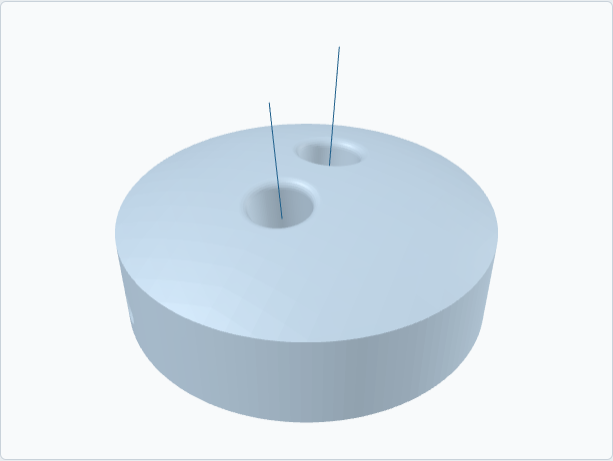

Rev Spinner
$45 plus shipping. Made to order.
Order on Etsy Order on TikTok Shop Build it first, free

The Rev Spinner is a fingers-only disc cut from the same ball surface, with your middle and ring hole sizes and your bridge. Swing it on a short pendulum, lift with the fingers at the bottom, and let it go onto the carpet. It spins in place, and the bars engraved on the base flicker so you can count how long. More lift at the release, longer spin. It gives you feedback. It doesn't measure anything.
No thumb hole, so it works for thumb-in, thumbless and two-handed bowlers. About 100 g in PETG, light enough for a hundred carpet releases in a sitting.
What you need to order
Right or left hand, your middle and ring hole sizes, and the bridge if your sheet lists it. If it doesn't, I use half an inch. Two-handed bowlers: your sheet has these numbers even without a thumb hole. Paste them into the personalization box at checkout, or build it first and paste the exported fit sheet.
In the box
- One Rev Spinner from your sheet, bores smoothed by hand
- A printed fit sheet matching your order
- The drill card: carpet spins and axis control
Lead time and the guarantee
Made to order. Printing takes 1 to 3 business days, then 2 to 5 days in the post. If the spinner doesn't match the sheet on your order, I reprint it free within 30 days. The full terms.
Released onto carpet, never thrown. It is not a bowling ball.